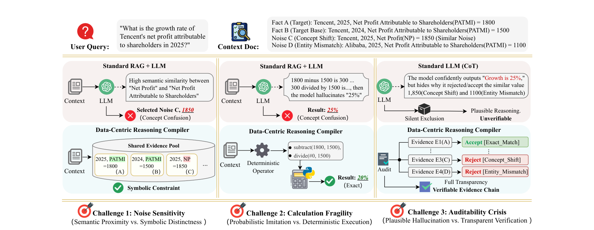
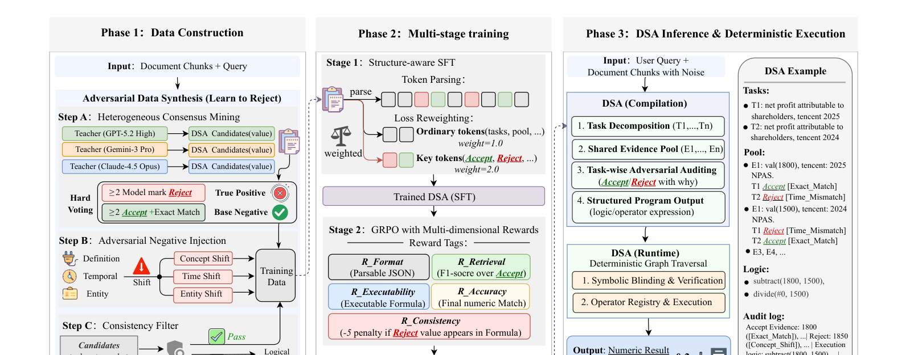
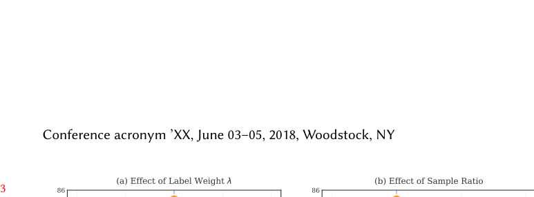
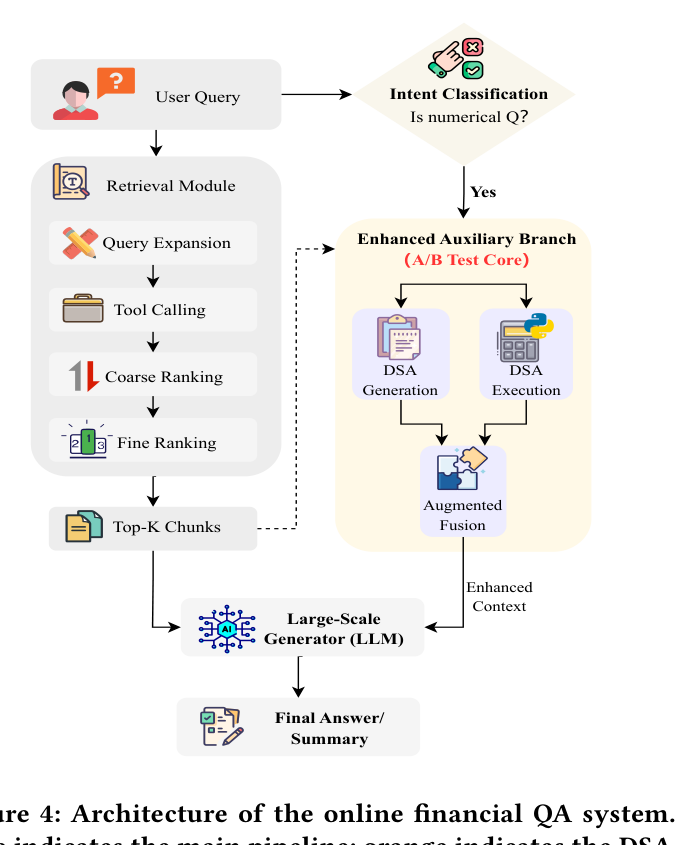

大模型在金融问答里很会「一本正经地算错数」。哪怕用 RAG 把财报喂进去，它仍然会三种翻车： 挑选错相似的噪声数字、用「概率猜词」假装算数、推理过程无法验证。
本文不去优化模型本身，而是换一条路——数据中心（data-centric）地训练一个「结构化智能体 DSA」， 把问答改造成「编译 + 执行」两段：DSA 像编译器一样挑证据、写出可执行程序（把不确定性关在这一步）， 再交给确定性的符号执行器去算（这一步 100% 可复现）。每一步都留下可审计的日志。
想象用户问：「腾讯 2025 年归母净利润的增长率是多少？」 系统用 RAG 检索到一堆财报片段，里面既有正确事实，也混进了「长得很像但其实不对」的干扰项。 标准做法（RAG + LLM、或 CoT）会在三个地方接连失手——这正是论文用 Figure 1 讲清楚的故事。

subtract→divide，得到精确的 20%。DCRC（Data-centric Reasoning Compiler）训练一个 DSA（Data-centric Structuring Agent，数据中心结构化智能体）， 让它扮演「编译器」的角色。整体形式化为：
给定问题 q 和检索文档 D，DSA π 先把它们编译成一份可验证的中间表示 I；
再由确定性执行器 E 执行 I 得到答案 a。
中间表示 I 必须含三样东西：① 子任务拆解 T、② 带审计决策的证据池 P、③ 符号计算逻辑 L。

Accept/Reject/tag/why 这些关键 token 把 loss 权重提到 2.0，逼模型重点学「判断边界」；再用 GRPO 强化学习，配五维奖励（格式 / 检索 F1 / 一致性惩罚 / 可执行 / 准确）。subtract→divide）、以及最终 audit log。数据是 DCRC 的命门。光有正样本不够，关键是让模型见过足够刁钻的负样本。三步走：
tag 与 why 是否语义自洽，不通过就丢弃。三种硬负样本（以「腾讯 2025 归母净利润 = 1800」为正样本，点击切换）：
指标名称语义极近、定义不同。「净利润」≠「归母净利润」，这是金融问答最致命的混淆源。
指标类型对，但年份/期间不符。查 2025 的数据却混进了往年的值。
指标和年份都对，但主体（公司/子公司 vs 集团）不符。
普通 SFT 对每个 token 一视同仁。但 DSA 的灵魂是审计决策（Accept / Reject）。
于是论文对这些关键 token 的损失乘上权重 α = 2.0，逼模型把注意力放在「分类决策边界」上，而非流水账式的字段填充。
SFT 打好底子后，用 GRPO（组相对策略优化）进一步打磨决策质量。奖励由五个维度组成——注意其中有一个重罚项：
这个 −5 的一致性惩罚很巧妙：它直接用奖励信号封死了「嘴上说拒绝、手上却用了」这种最隐蔽的逻辑漏洞。
训练好的 DSA 在推理时分工明确：编译这步可以「不确定」（用 LLM 挑证据、写程序），但执行这步必须「确定」。
target（目标指标）+ constraint（时间/条件）。subtract(1800,1500), divide(#0,1500)。绑定，多个值则报 CONFLICT，0 个则报 MISSING。## Role: 专业的金融数值推理分析师 ## Task: 理解问题 → 抽取证据 → 判别过滤 → 构造计算 ## Output Format (严格 JSON): { "tasks": { "T1": { "target": "目标指标名", "constraint": "时间/条件" } }, "pool": [ { "id": "E1", "val": "原始数值", "src": "来源文本片段", "decisions": { "T1": { "tag": "ACCEPT", "why": "[Exact_Match]" }, "T2": { "tag": "REJECT", "why": "[Time_Mismatch]" } } } ], "logic": "计算表达式" } ## ACCEPT 理由码: [Exact_Match] [Derived_Match] ## REJECT 理由码: [Time_Mismatch] [Entity_Mismatch] [Concept_Shift] [Unit_Error] [Irrelevant] ## 算子: add subtract multiply divide exp greater ## 引用: 用 #N 引用第 N 步结果 — subtract(100,80), divide(#0,80) = 0.25
论文附录 B/C 给了一个完整 running example。问题是：
「截至 2018 年的五年里，PMI 普通股相比标普 500 指数的百分比回报差是多少？」
标准答案 −0.538。下面一步步看 DSA 如何编译再确定性执行——注意它如何在同一张表里同时接受与拒绝同一个数字（取决于是哪个子任务）。
# DSA 输出 "tasks": { "T1": {"target":"pmi","constraint":"december 31 2018"}, "T2": {"target":"s&p 500 index","constraint":"december 31 2018"} } "pool": E1 val 96.50 -> T1 ACCEPT[Exact_Match] | T2 REJECT[Concept_Shift] E2 val 150.30 -> T1 REJECT[Concept_Shift] | T2 ACCEPT[Exact_Match] E3 val 100.00 -> ALL REJECT[Time_Mismatch] (这是 2013 年的基准值) E4 val 127.70 -> ALL REJECT[Concept_Shift] E5 val 144.50 -> ALL REJECT[Time_Mismatch] (这是 2017 年的值) "logic": subtract(96.50, const_100), divide(#0, const_100), subtract(150.30, const_100), divide(#2, const_100), subtract(#1, #3) # 确定性执行 Step 0: subtract(96.50, 100) = -3.50 Step 1: divide(#0, 100) = -0.035 Step 2: subtract(150.30, 100) = 50.30 Step 3: divide(#2, 100) = 0.503 Step 4: subtract(#1, #3) = -0.538 # 最终结果
传统 CoT 只演示「如何得到正确答案」；DCRC 额外显式记录「为什么排除了那些错误选项」。
论文称之为 Negative Reasoning（负向推理）——审计逻辑准确率高达 99.6%，
拒绝理由几乎完美对齐预定义的错误分类（[Time_Mismatch]、[Entity_Mismatch] 等），而不是含糊的自由文本解释。
整套方法的哲学可以一句话概括：
这也解释了为什么即便完全不训练，光是改成「结构化编译」输出，1.5B 基座就能从 CoT 的 32.45% 升到 35.10%—— 结构化本身就在引导更精确的信息抽取。
执行器只会调用预注册的函数（add / subtract / divide / table_avg ...），用 #N 引用前序步骤结果，
结果统一四舍五入到 5 位小数。好处有三：杜绝任意代码注入、支持多步引用、输出确定可复现。
OPERATOR_REGISTRY = {
"add": lambda a,b: a + b,
"subtract": lambda a,b: a - b,
"multiply": lambda a,b: a * b,
"divide": lambda a,b: a / b,
"exp": lambda a,b: a ** b,
"greater": lambda a,b: "yes" if a > b else "no",
"table_max": lambda row: max(row),
"table_min": lambda row: min(row),
"table_sum": lambda row: sum(row),
"table_avg": lambda row: sum(row) / len(row),
}
# 设计原则：① 沙箱执行（只调注册函数）② #N 引用解析 ③ 确定性输出（round 5 位）
| 方法 | FinQA-Dev | FinQA-Test | ConvFinQA-Dev |
|---|---|---|---|
| ENCORE | 71.60 | 69.40 | 76.00 |
| APOLLO | 72.91 | 71.07 | 78.76 |
| FINDER（前最佳，7B） | 77.13 | 75.32 | 81.95 |
| DSA-1.5B（本文，最小） | 73.05 | 73.50 | 71.00 |
| DSA-3B（本文） | 79.45 | 79.12 | 78.50 |
| DSA-7B（本文） | 84.71 | 84.66 | 85.67 |
连最小的 1.5B 模型（73.50%）都已超过 ENCORE / APOLLO；7B 在 FinQA-Test 上比前最佳 FINDER 高出 9.34 个百分点，并在两个数据集上全面最优，泛化性良好。
消融排序：对抗审计(ICCD)（−7.1）> 结构化 SFT（−4.5）> 负样本注入（−3.3）> 多维奖励（−1.7）。 多维奖励虽然掉分最小，但去掉后「被拒证据却出现在计算里」的自相矛盾案例显著增多——它守的是逻辑一致性。

λ=2.0 + 1:2 比例，在各规模下都接近最优（图中圆圈标注）。把 DCRC 部署进腾讯元宝金融问答做 7 天 A/B（9:1 流量，人工评 2000 条事实声明）。DSA 模块跑在 2×H20（vLLM），平均输出 182 token、延迟 0.92s。

| 线上指标（7 天） | Baseline | +DSA | Δ |
|---|---|---|---|
| 幻觉率 ↓ | 12.44% | 6.82% | −5.62pp |
| 回答准确率 ↑ | 85.26% | 91.48% | +6.22pp |
| 实时指标准确率 ↑ | 87.79% | 95.69% | +7.90pp |
| 历史指标准确率 ↑ | 86.73% | 93.37% | +6.64pp |
| 用户满意度 ↑ | 72.00% | 88.00% | +16.00pp |
实时指标（股价、最新季报）提升最猛（+7.90pp），因为这类数据更新频繁、最容易被检索噪声污染——恰是 DSA「显式拒绝」最能发力的地方。 用 0.92s 的额外延迟 换来这些质量提升，在高风险金融场景里是划算的取舍。